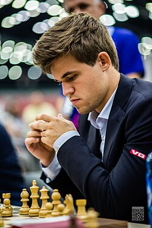
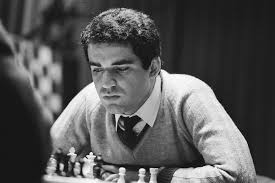
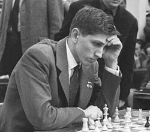
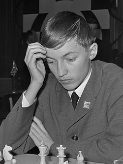

Chess Legends
Explore the greatest chess players throughout history who have shaped the game we know today.

Magnus Carlsen
World Chess Champion 2013-2023
1990 - Present
Norwegian
Key Achievements
- Highest rated player in history (peak rating 2882)
- World Chess Champion for a decade
- World Rapid Chess Champion multiple times
- World Blitz Chess Champion multiple times
Magnus Carlsen is widely regarded as the strongest chess player of all time...

Garry Kasparov
World Chess Champion 1985-2000
1963 - Present
Russian
Key Achievements
- World Chess Champion for 15 years
- Ranked world #1 for 255 months
- Highest Elo rating until surpassed by Carlsen
Garry Kasparov dominated chess from the mid-1980s until his retirement in 2005...

Bobby Fischer
World Chess Champion 1972-1975
1943 - 2008
American
Key Achievements
- US Chess Champion at age 14
- Won 20 consecutive matches in the 1970-71 Candidates Tournament
- Defeated Boris Spassky in the 'Match of the Century' (1972)
Robert James Fischer was a chess prodigy who became famous for his brilliant play...

Anatoly Karpov
World Chess Champion 1975-1985
1951 - Present
Russian
Key Achievements
- World Chess Champion for a decade
- Over 160 tournament victories
- One of the greatest positional players in history
Anatoly Karpov became World Champion by default when Fischer refused to defend his title in 1975...